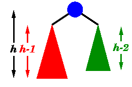
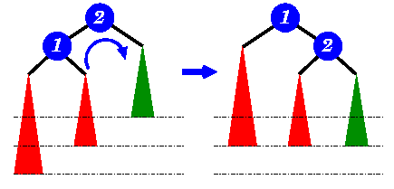

|
Data Structures and Algorithms
|
| 8.3 AVL Trees
|
An AVL tree is another balanced
binary search tree.
Named after their inventors,
Adelson-Velskii and Landis,
they were the first dynamically balanced trees to be proposed.
Like red-black trees, they are not perfectly balanced, but
pairs of sub-trees differ in height by at most 1,
maintaining an
O(logn) search time.
Addition and deletion operations also take
O(logn) time.
Definition of an AVL tree
An AVL tree is a binary search tree which has the
following properties:
- The sub-trees of every node differ in height by at most one.
- Every sub-tree is an AVL tree.
|
 |
| |
Balance requirement for an AVL tree:
the left and right sub-trees differ by
at most 1 in height. |
You need to be careful with this definition: it permits
some apparently unbalanced trees!
For example, here are some trees:
| Tree | AVL tree? |
|---|
 | Yes
Examination shows that each left sub-tree has a height 1 greater
than each right sub-tree. |
 | No
Sub-tree with root 8 has height 4 and sub-tree with root 18
has height 2 |
Insertion
As with the red-black tree,
insertion is somewhat complex and involves a number
of cases.
Implementations of AVL tree insertion may be found in many
textbooks:
they rely on adding an extra attribute, the
balance factor
to each node.
This factor indicates whether the tree is
left-heavy (the height of the left sub-tree is 1 greater
than the right sub-tree),
balanced (both sub-trees are the same height) or
right-heavy (the height of the right sub-tree is 1 greater
than the left sub-tree).
If the balance would be destroyed by an insertion,
a rotation is performed to correct the balance.
|  |
A new item has been added to the left subtree of node 1,
causing its height to become 2 greater than 2's
right sub-tree (shown in green).
A right-rotation is performed to correct the imbalance.
|
- AVL trees
- Trees which remain balanced - and thus guarantee
O(logn) search times - in a dynamic environment.
Or more importantly, since any tree can be re-balanced - but at
considerable cost - can be re-balanced in O(logn) time.
© John Morris, 1998